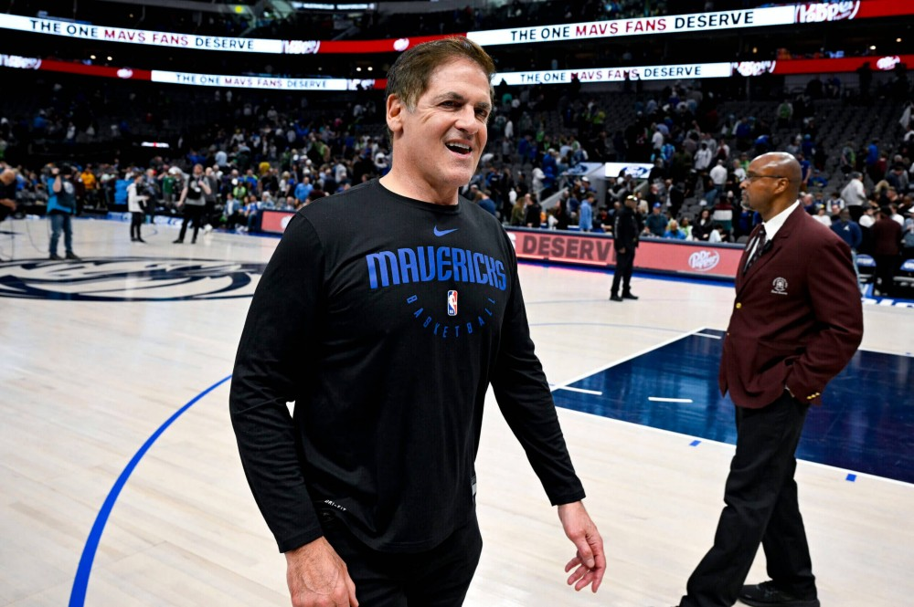

By David Aldridge
Luka and Kyrie after a win against the Kings on April 5, photo by Kevin Jairaj.
One doubts everyone in the house at Capital One Arena in D.C. paid full price for their tickets Friday, but a lot of people did, expecting at least one of the two NBA teams to put their top NBA players on the floor. What they got, instead, was a whole lot of Sioux Falls Skyforce and Capital City Go-Go talent, not that there’s anything wrong with either. Both teams, really, played hard Friday, if not especially well. But the people who go see those G League affiliates play aren’t paying NBA prices to do so.
For that matter, I await the league’s “investigation” of the Blazers, who put Damian Lillard on ice the last two weeks, just as Portland threatened to escape its high perch in the NBA Draft Lottery odds. Or its inquiry into why the Pacers, fighting Washington for lottery positioning, haven’t played Tyrese Haliburton or Myles Turner since the end of March. Surely the NBA will want to know the particulars of Detroit’s 7-34 record in Calendar 2023, including a 2-22 stretch since the second week of February, which has solidified the Pistons’ spot atop — or, if you prefer at the bottom — of the standings.
All those teams have been engaged in obvious soft or hard tanking to improve their draft position. The Mavericks folded Friday just to get a draft position.
Yes, Dallas was inelegant in how it rolled out its obvious intention Friday. And the result was, indeed, embarrassing for a team that made the Western Conference finals last season. But if you believe in the efficacy of cold, hard numbers, then what Mark Cuban and GM Nico Harrison did in making sure the team took home an L isn’t only understandable, it should be, to you, best practice.
Mavericks owner Mark Cuban walks off the court after his team lost to the Chicago Bulls, phtoto by Jerome Miron.
To summarize: Dallas entered play Friday a half-game behind Oklahoma City for 10th place — the last Play-In spot — in the West. If the Mavericks won their last two games, while OKC lost in its regular-season finale Sunday to Memphis — Dallas would have overtaken the Thunder for 10th, and made the postseason, or at least what passes for the “postseason” in today’s NBA. But Dallas’ front office made the calculation that losing was worth more to the franchise than winning. Because by not making the playoffs, the Mavs would hold onto their first-round pick in this year’s draft. They owe a future first to the Knicks as part of the trade that sent the aforementioned Porziņģis from New York to Dallas in 2019. But the trade protection on the Mavs’ pick this year goes 1 through 10 in the first round. If Dallas had qualified for the playoffs, it would have finished no worse than 11th and would have had to give its first-rounder to the Knicks.
So, for the Mavs’ brass, it was a simple equation:
Top 10 pick in 2023 draft > almost certain first round annihilation by Denver
The Mavericks would have had to not only beat the ninth seed — right now, Minnesota — but they would then have to beat the loser of the 7-8 Play-In matchup, which currently is either the Lakers and Pelicans, just to qualify to play the top-seeded Nuggets in a best-of-seven first-round match.
For Dallas, that wasn’t worth giving up the pick. That’s a choice. But franchises have the right to make those choices, just as fans have the right to support or reject those choices. Please don’t come at me with your “this is why I don’t watch the NBA” hot takes unless you posted the same while the Astros lost 310 games in a three-season (2012-14) period in order to seed their franchise with many of the players who helped them to two World Series titles in the last few years.
There’s almost no chance the Mavs will jump into the top four of the first round from their current 10th spot. Teams have only come from that far back in the lottery to the top four a handful of times. But the 10th pick still has significant value for Dallas. Keeping it allows the Mavericks to use it in a trade this offseason. Or, at the least, the Mavs can add a player who will be incredibly cheap, on his rookie contract, for several years — not a small consideration for a franchise that will have to give Irving a monster contract this summer to keep him from bolting via free agency, and to keep him alongside Dončić, who got a supermax rookie extension in 2021
Yes, changing the lottery rules to even out the odds for the bottom four teams getting the top pick, along with the Play-In Tournament, has reduced the number of teams that actively tank in a given season. And, yes, I loathe the farkakte Play-In, as it rewards mediocrity. The average record of the four Eastern Conference teams that made the Play-In last season was 44-38; the average record of the four West teams, 40-42. Only one of the eight Play-In teams last season, Minnesota, won more than 45 games. But I get that the Play-In has value. It keeps more teams in the playoff hunt, which means teams sell more late-season tickets, fans buy more food and beer, etc. I loved the Wolves’ celebration last year, and I loved “Inside the NBA” for clowning them about it.
Reducing tanking, though, does not eliminate it. The Pistons, Rockets, Spurs and Hornets have clearly mailed it in for months. And, over the last month, as their respective playoff chances lapsed, so have the Blazers, Wizards, Pacers and Jazz. And, let’s make no mistake: I wholeheartedly support this strategy, at least in the short term of a given season. Because it is a team-building strategy. With max contracts in excess of $250 million, teams have to have cheaper players on their rosters. The best way to get those players is through the draft. And the best way to get the best of those relatively inexpensive players is to have as high a draft pick as possible.
Unless, of course, the NBA wants to talk about getting rid of the draft.
(I want to come back to this topic, but for purposes of writing a column that doesn’t careen around, let’s stay with the Mavs for now.)
Mavericks fans — all fans — have to decide how they feel about this. If you don’t want to watch tanking basketball in person, don’t. Vote with your feet, or your empty seats. Make teams feel the pain of your anger economically.
And, the Mavs’ decision doesn’t come without significant internal risk.
Dončić has already thrown his franchise-shifting weight around the team. The Mavericks’ inability to re-sign Jalen Brunson last summer puts even more pressure on Dallas to keep Irving this summer. Dončić made it clear he wanted to make the playoffs, and why wouldn’t he? Like all great players, Dončić surely believes he can carry a team through a postseason. That’s when the game’s best players want the rock in their hands. His team denied him that chance Friday. Cuban fell on the sword in discussing the season with reporters earlier this week, but that won’t be enough. There will surely be a reckoning with his team’s superstar soon unless Dallas fundamentally fixes its broken roster. That pick could wind up being an important piece of a quick retooling.
Tanking is never easy. Done for too long, it corrodes a franchise. But in short doses — like for two games, even if done clumsily — it’s still a necessary tool in the toolbox, a temporary step back, in order to increase the chance for a bigger leap forward.